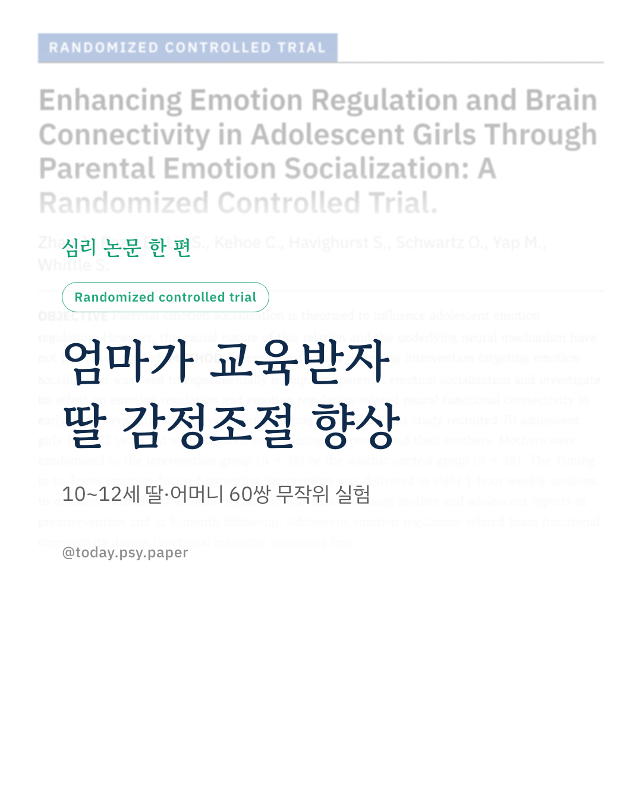
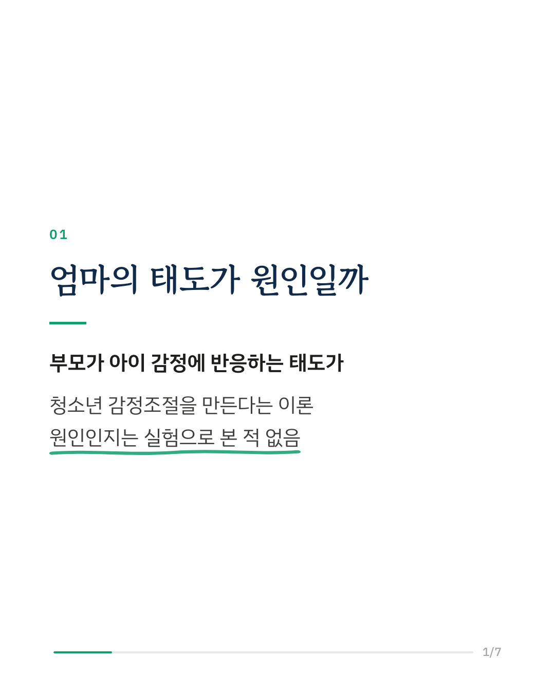
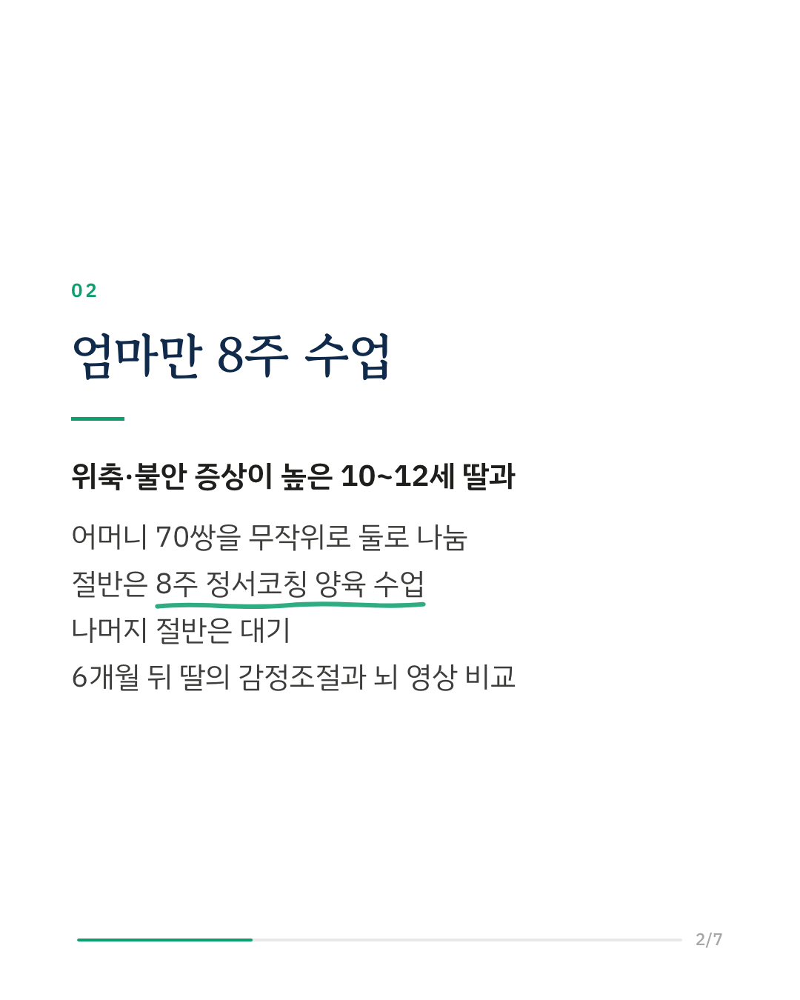
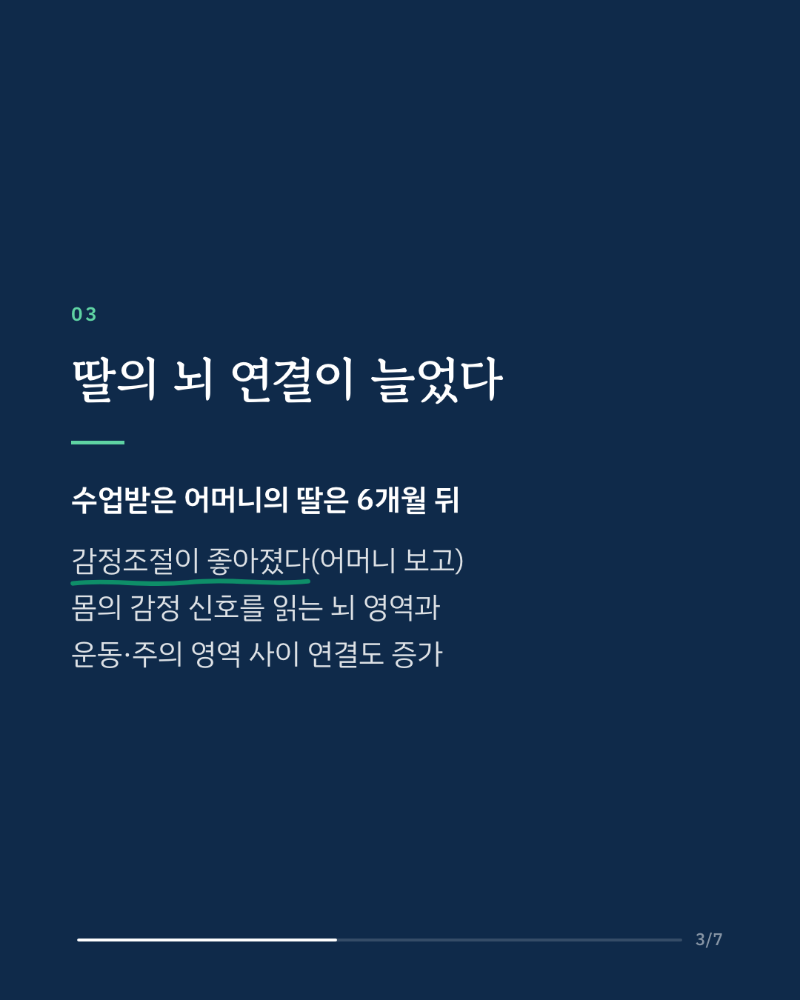
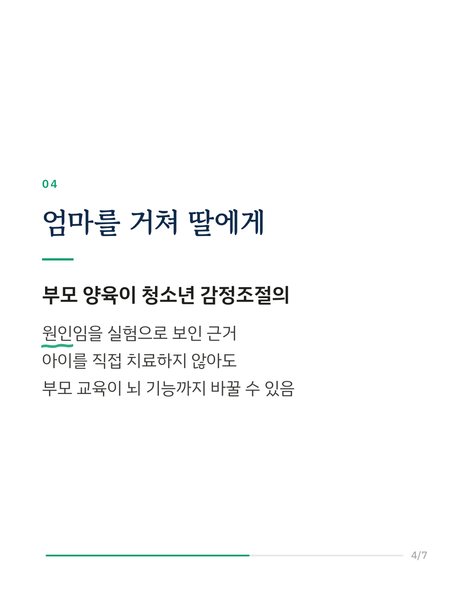
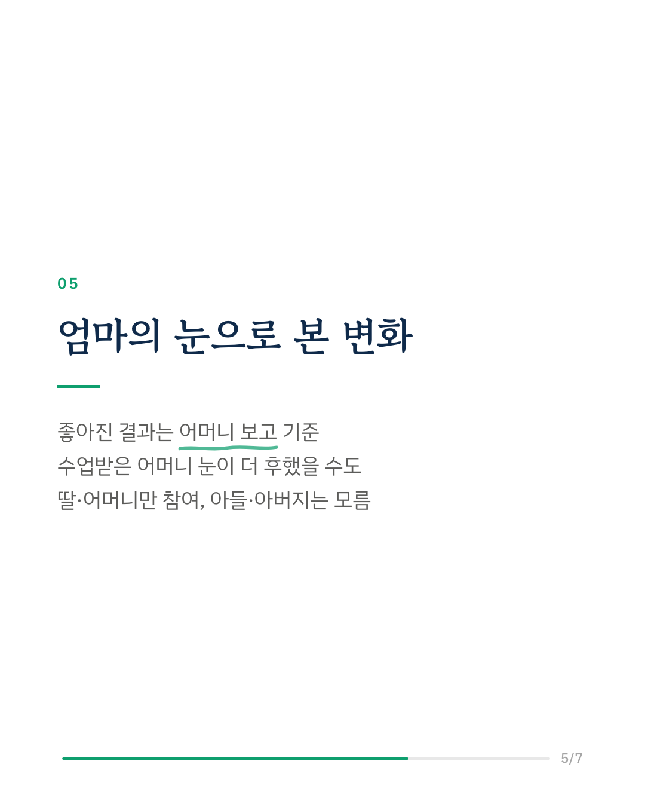
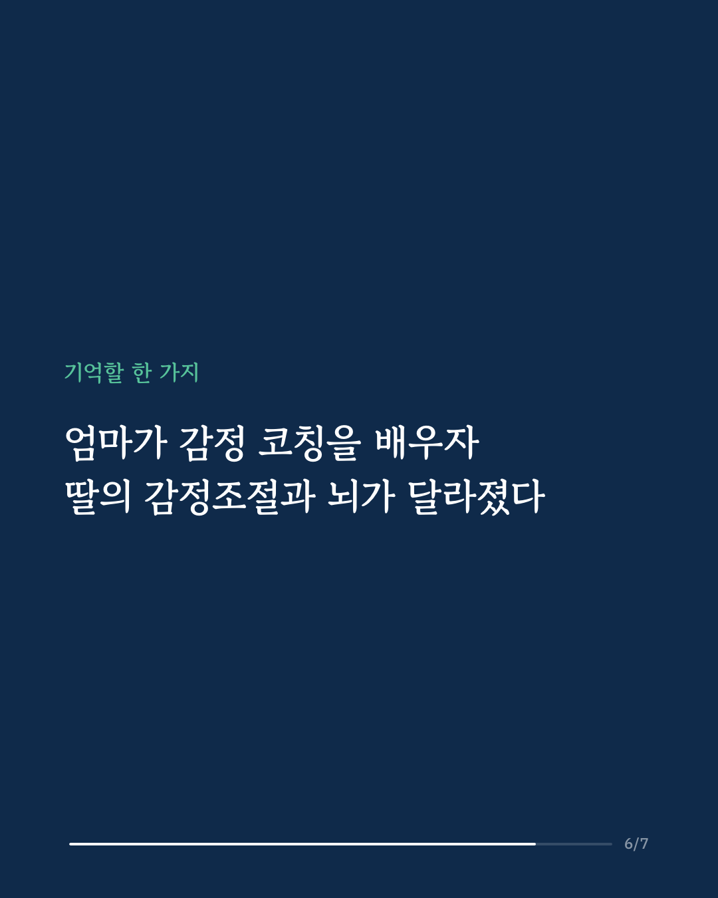
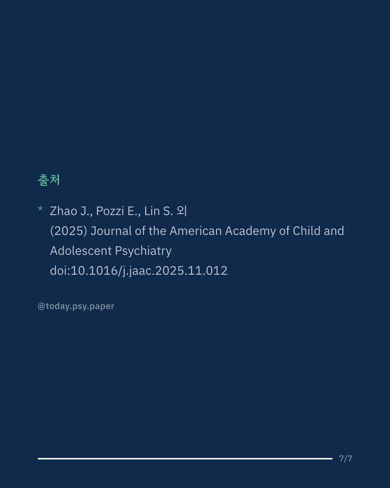

청소년의 감정조절 능력은 부모가 아이의 감정을 어떻게 대하는지에 따라 달라진다고 오래 이야기돼 왔습니다. 하지만 그것이 정말 원인인지, 뇌에서는 어떤 변화가 일어나는지는 실험으로 확인된 적이 없었습니다. 연구진은 어머니에게만 양육 교육을 하고 딸의 변화를 추적하는 무작위 대조 실험으로 이 질문에 답하려 했습니다. 불안·위축 같은 내재화 증상이 높은 10~12세 소녀와 어머니 70쌍을 모아, 절반의 어머니에게 '튠 인 투 틴즈(Tuning in to Teens)'라는 정서코칭 양육 프로그램을 주 1회, 8주 동안 진행했습니다. 나머지 절반은 대기했습니다. 6개월 뒤 60쌍을 분석한 결과, 교육을 받은 어머니의 딸은 어머니 보고에서 감정조절이 좋아졌고, 뇌 영상에서는 몸의 감정 신호를 알아차리는 영역(섬엽)과 운동·주의 관련 영역 사이의 연결이 대기 집단보다 더 늘어 있었습니다. 연구진은 이 결과를 부모의 정서 사회화가 청소년의 감정조절을 키운다는 인과적 근거로 해석합니다. 아이를 직접 치료하지 않고 부모를 교육하는 것만으로 아이의 뇌 기능까지 달라질 수 있음을 보여줍니다. 다만 감정조절이 좋아졌다는 결과는 교육을 받은 어머니 자신의 평가에 기댄 것이어서, 딸이 아니라 어머니의 눈이 달라진 가능성을 배제하기 어렵습니다. Journal of the American Academy of Child and Adolescent Psychiatry (2025), 'Enhancing Emotion Regulation and Brain Connectivity in Adolescent Girls Through Parental Emotion Socialization: A Randomized Controlled Trial' DOI: 10.1016/j.jaac.2025.11.012 #임상심리 #심리학연구 #논문리뷰 #청소년심리 #감정조절 #부모교육 #양육 #아동청소년정신의학
python3 publish.py 41318087